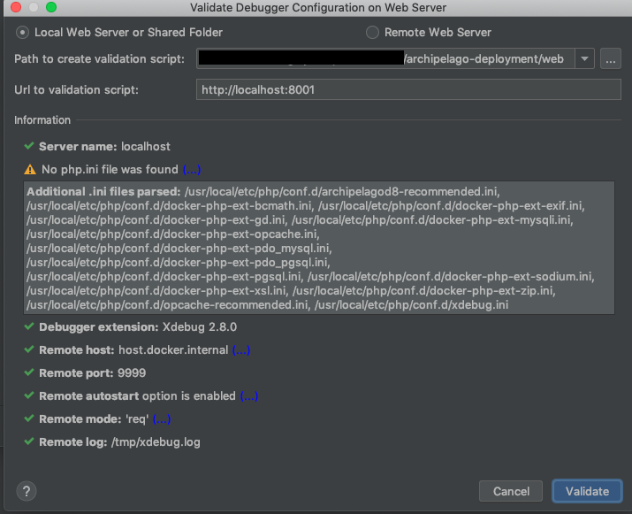
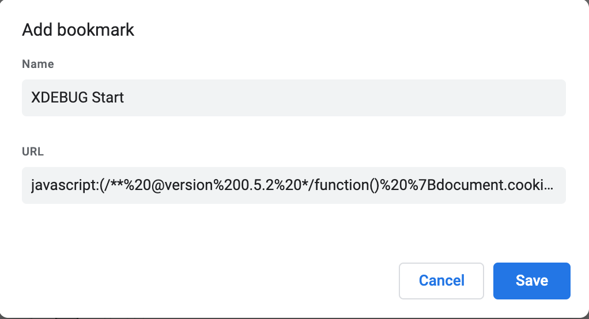
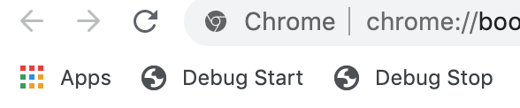
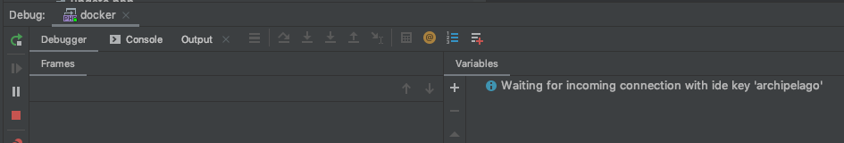

Debugging PHP in Archipelago
This document describes how to enable Xdebug for local PHP development using the PHPStorm IDE and a docker container running the Archipelago esmero-php:development image. It involves interacting with the esmero/archipelago-docker-images repo and the esmero/archipelago-deployment repo.
Part 1: Docker
- Run the following commands from your
/archipelago-deploymentdirectory:
docker-compose down \
docker-compose -f docker-compose.yml -f docker-compose.dev.yml up -d
This version of docker-compose up uses an override file to modify our services. docker-compose.dev.yml we now have an extra PHP container called esmero-php-debug. To stop the containers in the future, run docker-compose -f docker-compose.yml -f docker-compose.dev.yml down.
So we have reloaded the containers and now you are ready for Part 2.
Part 2: PHPStorm
-
In PHPStorm, open your
archipelago-deploymentproject. -
Go to
Preferences > Languages & Frameworks > PHP > Debug. In this window there is an Xdebug section. Use these settings:- Debug port:
9999. (do NOT use the default, 9000) - Can accept external connections: yes, select checkbox
- (optional) Break at first line in PHP scripts: uncheck. If you leave this selected, you will have to manually step through a breakpoint from Drupal's main index.php file on every request, which is quite annoying. However, leaving this box checked can be useful for making sure the connection is working at first, before you have set any internal breakpoints.
Your settings should look like this. Hit APPLY and OK.

- Debug port:
-
Go to
Preferences > Languages & Frameworks > PHP > Servers. We will create a new server here. Use these settings:- Name:
docker-debug-server - Host:
localhost - Port:
8001 - Use path mappings: yes, select the checkbox
- Under project files, select the top-level
archipelago-deploymentdirectory in theFile/Directorycolumn. - In the
Absolute path on the serveradd/var/www/html
Hit APPLY and OK and close the window.

- Name:
-
Go to
Run > Edit Configurations. Hit the+Button to create a new PHP Remote Debug. Name whatever you want, I called minedocker. Use these settings:- Filter debug connection by IDE Key: yes, select the checkbox
- Server: select
docker-debug-serverfrom dropdown (we created this in step 3) - IDE Key:
archipelago(this matches the key set in our container)

-
Validate your connection. With
Run > Edit Configurationsstill open, you can hit the link that says "Validate". Use these settings in the following validation window:- Path to create validation script
<your local path>/archipelago-deployment/web - Url to validation script:
http://localhost:8001
Hit VALIDATE. You should get a series of green check marks. If you get a warning about missing
php.inifile, that is OK, our file has a different name in the container (xdebug.ini) and is still being read correctly.  - Path to create validation script
# Set up Browser Bookmarklets
- We are still in the
archipelago-deploymentrepository. Find the/xdebugfolder. Inside is a filejs-bookmarks-for-xdebug.txt. This text file contains Javascript that you can copy and paste into your browser's bookmarks manager. Paste the JS snippet into the URL for the bookmark. Create 2 bookmarks: Start, and Stop. 

We will use these bookmarks to Start and Stop debugging sessions from the browser.
# Actually Debugging!
1. Hit the button (top right bar of PHPStorm) that looks like a telephone, for Start Listening for PHP Debug Connections.

-
Now, you can use
Run > Debugand select thedockernamed configuration that we created in the previous steps. The debugging console will appear. It will say it is waiting for incoming connection from 'archipelago' .  -
Right now the debugging session is not enabled. Browse to
localhost:8001. Hit theStart Debuggingbookmark you created in the previous session. This loads a cookie calledXDEBUG_SESSION, with the valuearchipelagothat can communicate with PHPStorm. -
Now set a breakpoint in your code, and refresh the page. If you have breakpoints set, either manually, or from leaving "Break at first line in PHP scripts" checked, you should have output now in the debugger.
-
If you are done actively debugging, it is best to hit the
Stop Debuggingbookmark we also created in the previous step. This will greatly improve speed and performance for your app in development. When you need to debug, just turn on debugging using the bookmarks again. -
If you would like to see the output of your xdebug logs, run the following script:
docker exec -ti esmero-php bash -c 'tail -f /tmp/xdebug.log > /proc/1/fd/2'Then, you can use the typical docker logs command on the
esmero-phpcontainer, and you will see the xdebug output:docker logs esmero-php -f
Xdebug makes accessing variables in Drupal kind of great. Many possibilities, including debugging for Twig templates. Happy debugging!
Thank you for reading! Please contact us on our Archipelago Commons Google Group with any questions or feedback.
Return to the Archipelago Documentation main page.